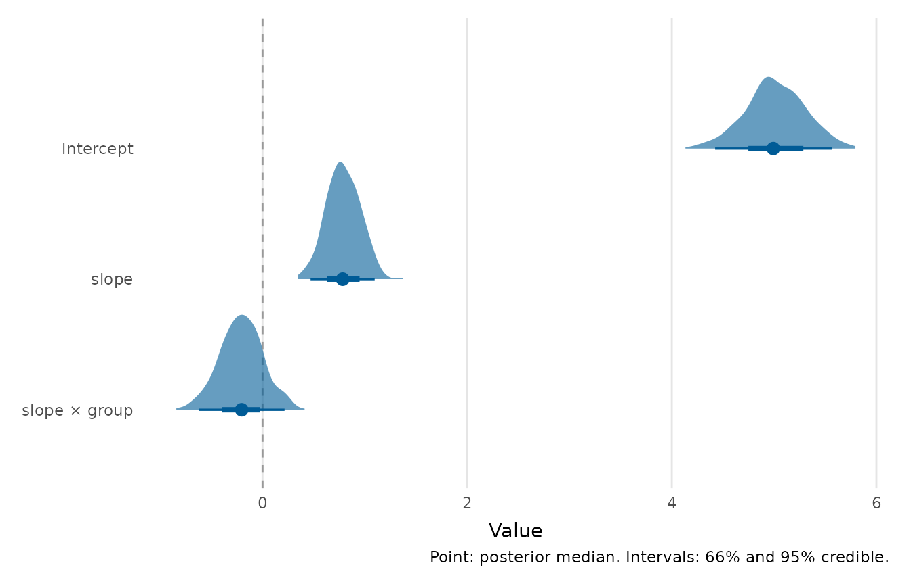
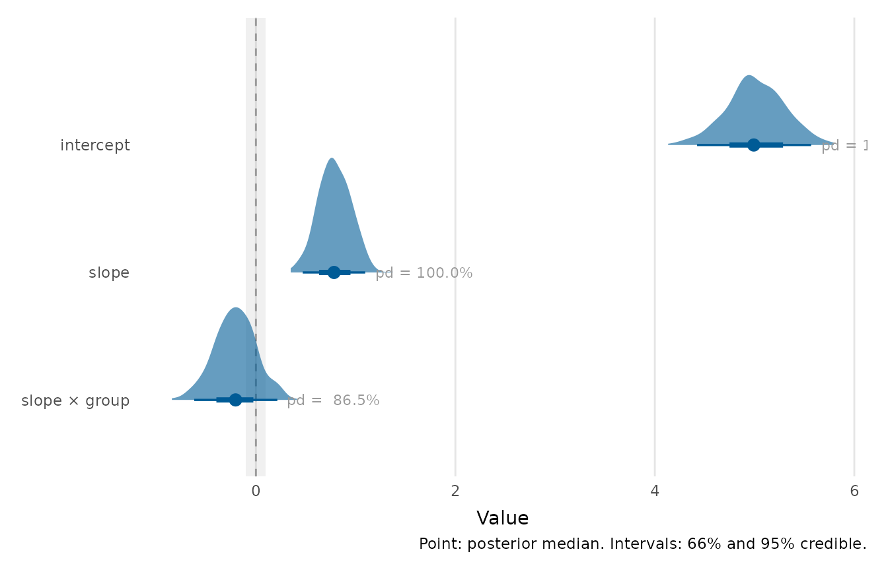
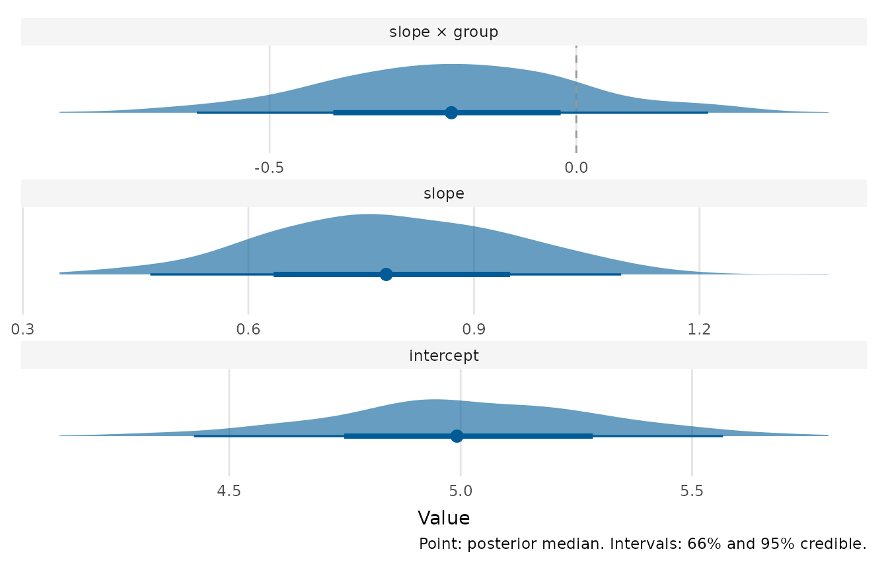

Displays posterior (or, more generally, bootstrap or simulation) draws as a distribution per parameter, in the style of a half-eye (a density slab with a point-and-interval beneath it), an interval-only forest plot, a gradient interval or a dotplot. The full shape of the posterior is shown, so skew, multimodality and the relative mass on either side of a reference value are all visible, rather than a point and two limits alone.
Usage
posterior_plot(
draws,
style = c("halfeye", "interval", "gradient", "dots"),
point = c("median", "mean"),
widths = c(0.66, 0.95),
interaction = c("times", "asterisk", "colon", "space"),
labels = NULL,
reference_line = 0,
rope = NULL,
pd = FALSE,
facet = FALSE,
scales = c("fixed", "free"),
colour = depictr_brand(),
fill = depictr_brand(),
rope_fill = depictr_reference(),
rope_alpha = 0.15,
title = NULL,
x_lab = "Value",
caption = NULL
)Arguments
- draws
Posterior draws: a fitted model (
brms/rstanarm), aposteriordraws object, a matrix, or a long/wide data frame (see Details).- style
One of
"halfeye"(density slab + interval, the default),"interval"(point and two nested intervals, no slab),"gradient"(a colour-graded interval) or"dots"(a quantile dotplot). Unknown values and a missing 'ggdist' fall back to"interval".- point
Central summary:
"median"or"mean".- widths
Two interval widths (inner and outer), as probabilities. The outer width is used for the caption and the displayed interval mass.
- interaction
Passed to
format_terms()for the parameter labels.- labels
Optional named character vector renaming parameters, e.g.
c(conditionunrelated = "condition"). Unmatched parameters fall back toformat_terms().- reference_line
Position of a vertical reference line, or
NULL/NAto omit it. There is no universally meaningful reference for every parameter, so this defaults to0(the usual "no effect" line for differences and slopes) but should be set or cleared deliberately.- rope
Optional length-2 numeric
c(lo, hi)giving a region of practical equivalence to shade behind the distributions.- pd
If
TRUE, annotate each parameter with its probability of direction relative toreference_line, the posterior probability that the parameter lies on its majority side of the reference (a value in [0.5, 1]). Requires a finitereference_line.- facet
Whether to give each parameter its own panel with a free x-axis, laid out one per row. This keeps the small parameters legible when a large one (typically the intercept) would otherwise stretch the shared axis and squish the rest. Defaults to
FALSE. A convenience alias forscales = "free".- scales
Either
"fixed"(the default, a single shared x-axis) or"free"(one free-scaled panel per parameter). Whenfacet = TRUEthis is forced to"free".- colour, fill
Colours for the point/interval and for the density slab. Default to the depictr brand blue.
- rope_fill, rope_alpha
Fill colour and opacity of the ROPE band.
- title, x_lab
Plot title and value-axis label.
- caption
Plot caption. The default (
NULL) auto-captions the interval mass; passNAto omit a caption.
Value
A ggplot2::ggplot object.
Details
Draws may be supplied in many shapes: a fitted Bayesian model (brms or
rstanarm), a posterior draws object, a wide data frame or matrix with
one column of draws per parameter, or a long data frame (a parameter column
and a value column). For fitted models only the fixed-effect (population)
parameters are kept, with the brms b_ prefix stripped.
The slab styles use the 'ggdist' package. When 'ggdist' is not installed the
function falls back to the point-and-nested-interval display (equivalent to
style = "interval") and emits an informative message.
Examples
# Wide draws: one column per parameter
set.seed(1)
draws <- data.frame(
intercept = rnorm(400, 5, 0.3),
slope = rnorm(400, 0.8, 0.15),
`slope:group` = rnorm(400, -0.2, 0.2),
check.names = FALSE
)
posterior_plot(draws)

# \donttest{
# A region of practical equivalence and a probability-of-direction label
posterior_plot(draws, rope = c(-0.1, 0.1), pd = TRUE)

# When one parameter dwarfs the others, give each its own free-scaled panel:
posterior_plot(draws, facet = TRUE)

# }